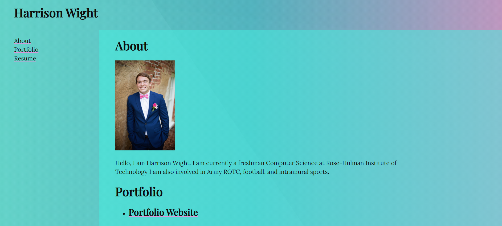
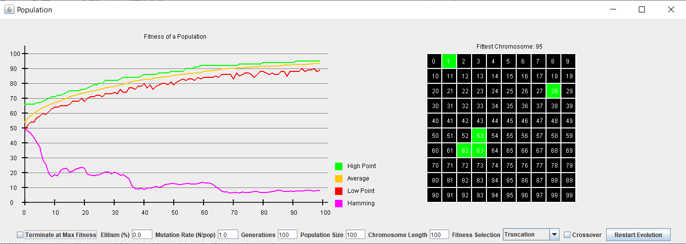

About
Hello, I am Harrison Wight. I am currently a freshman Computer Science at Rose-Hulman Institute of Technology I am also involved in Army ROTC, football, Phi Gamma Delta Fraternity, and intramural sports.
Portfolio
-
Portfolio Website
In this portfolio project for CSSE 280, I created my own Portfolio Website to showcase my talents as a Computer Science major.
-
Genetic Algorithm
My partner and I programmed a Genetic Algorithm in Java to simulate a population over a certain period of time. In this simulation, the user can save and load individual chromosomes or display the evolution of a population.
- Terminate at max fitness
- Elitism rate
- Mutation rate
- Number of generations
- Population size
- Chromosome length
- Fitness function
- Crossover
On one graph, the user can see the high, average, low, and hamming distance from each population. The user could also see the fitness levels of each individual.
Harrison Wight
Objective
Seeking a summer internship to further my expertise in the computer science field
Education
Bachelor of Science in Computer Science May 2024
- Rose-Hulman Institute of Technology, Terre Haute, IN GPA: 3.68/4.0
- Related Courses: Intro to Computer Systems,
- Object-Oriented Software Development, and Calculus III
Carl Sandburg College June 2018-May 2020
- Achievements: Dean’s List (2x, Full-Time) and 27 College Credits GPA: 4.0/4.0
Williamsfield High School August 2016-May 2020
- Achievements: Valedictorian, STEM Student of the Year, AP Scholar, and NHS GPA: 4.0/4.0
- Related Courses: AP Computer Science A and AP Computer Science Principles
Experience
-
First Robotics Competition,
Williamsfield, IL,
January 2016-April 2020
Team Captain & Lead Programmer
- Built and programmed a robot to compete in numerous competitions
- Gained first-hand programming experience in Java and electrical systems
- Managed teams in the design, development, and marketing of the robot
-
Wight Chevrolet,
Williamsfield, IL,
May 2016-August 2020
Auto Detailer/Lawn Care
- Completed various tasks around the dealership
- Worked with management to satisfy customer’s needs
- Operated efficiently to ensure tasks were completed in a timely manner
Skills and Abilities
- Computer:
- Java, JavaScript, Python, HTML, C, and C++
- Certifications:
- Word, Excel, PowerPoint, and CPR
- Personal:
- Leadership, Communication, Teamwork, and Hard work
Activities and Involvement
- Army ROTC Cadet 2020-2021
- Phi Gamma Delta Fraternity 2020-2021
- Rose-Hulman Football Team 2020-2021
- Intramural Volleyball & Ultimate Frisbee 2020-2021
- Fellowship of Christian Athletes (FCA) 2020-2021